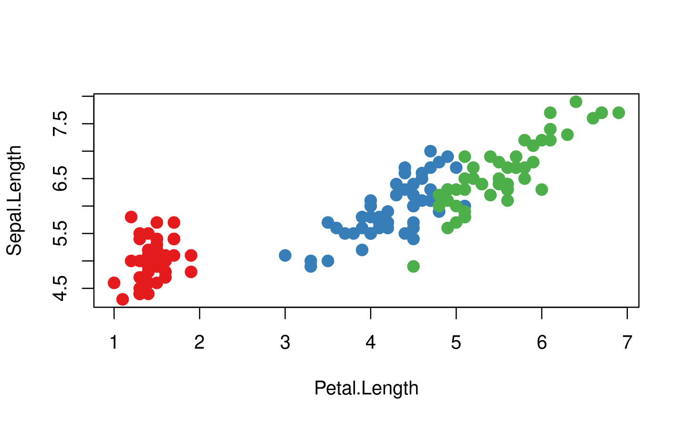
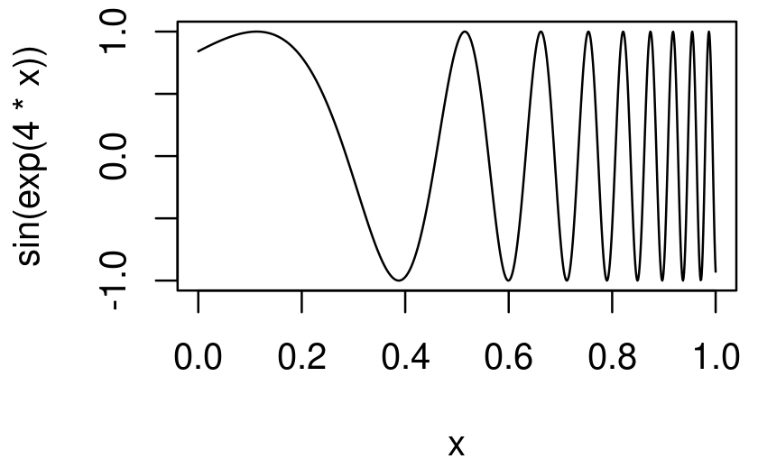

library(rlang)
library(purrr)19 Cuasicita
19.1 Introducción
Ahora que comprende la estructura de árbol del código R, es hora de volver a una de las ideas fundamentales que hacen que ‘expr()’ y ‘ast()’ funcionen: citar (poner entre comillas). En una evaluación ordenada, todas las funciones de comillas son en realidad funciones de cuasicita porque también admiten la eliminación de comillas. Donde citar es el acto de capturar una expresión no evaluada, no citar es la capacidad de evaluar selectivamente partes de una expresión entrecomillada. En conjunto, esto se llama cuasicitar. La cuasicita facilita la creación de funciones que combinan código escrito por el autor de la función con código escrito por el usuario de la función. Esto ayuda a resolver una amplia variedad de problemas desafiantes.
La cuasicita es uno de los tres pilares de la evaluación ordenada. Aprenderá sobre los otros dos (cuotas y máscara de datos) en el Capítulo 20. Cuando se usa sola, la cuasicita es más útil para la programación, particularmente para generar código. Pero cuando se combina con otras técnicas, la evaluación ordenada se convierte en una poderosa herramienta para el análisis de datos.
Estructura
La Sección 19.2 motiva el desarrollo de la cuasicita con una función,
cement(), que funciona comopaste()pero cita automáticamente sus argumentos para que usted no tenga que hacerlo.La Sección 19.3 le brinda las herramientas para citar expresiones, ya sea que provengan de usted o del usuario, o si usa herramientas rlang o base R.
La Sección 19.4 introduce la mayor diferencia entre las funciones de citar de rlang y la función de citar base: quitar las comillas con
!!y!!!.La Sección 19.5 analiza las tres técnicas principales sin comillas que utilizan las funciones base de R para deshabilitar el comportamiento de comillas.
La Sección 19.6 explora otro lugar donde puedes usar
!!!, funciones que toman.... También presenta el operador especial:=, que le permite cambiar dinámicamente los nombres de los argumentos.La Sección 19.7 algunos usos prácticos de las comillas para resolver problemas que naturalmente requieren cierta generación de código.
La Sección 19.8 termina con un poco de historia de la cuasicitación para aquellos que estén interesados.
Requisitos previos
Asegúrese de haber leído la descripción general de metaprogramación en el Capítulo 17 para obtener una descripción general amplia de la motivación y el vocabulario básico, y que esté familiarizado con la estructura de árbol de las expresiones como se describe en la Sección 18.3.
En cuanto al código, usaremos principalmente las herramientas de rlang, pero al final del capítulo también verá algunas aplicaciones poderosas junto con purrr.
Trabajo relacionado
Las funciones de citar tienen profundas conexiones con las macros de Lisp. Pero las macros generalmente se ejecutan en tiempo de compilación, que no existe en R, y siempre ingresan y generan AST. Consulte Lumley (2001) para conocer un enfoque para implementarlas en R. Las funciones de citar están más estrechamente relacionadas con las funciones más esotéricas de Lisp fexprs, donde todos los argumentos se citan por defecto. Es útil conocer estos términos cuando se busca trabajo relacionado en otros lenguajes de programación.
19.2 Motivación
Comenzaremos con un ejemplo concreto que ayuda a motivar la necesidad de eliminar las comillas y, por lo tanto, de las cuasicitas. Imagina que estás creando muchas cadenas uniendo palabras:
paste("Good", "morning", "Hadley")
#> [1] "Good morning Hadley"
paste("Good", "afternoon", "Alice")
#> [1] "Good afternoon Alice"Estás harto y cansado de escribir todas esas comillas y, en cambio, solo quieres usar palabras simples. Con ese fin, ha escrito la siguiente función. (No se preocupe por la implementación por ahora; aprenderá sobre las piezas más adelante).
cement <- function(...) {
args <- ensyms(...)
paste(purrr::map(args, as_string), collapse = " ")
}
cement(Good, morning, Hadley)
#> [1] "Good morning Hadley"
cement(Good, afternoon, Alice)
#> [1] "Good afternoon Alice"Formalmente, esta función cita todas sus entradas. Puede pensar en ello como poner automáticamente comillas alrededor de cada argumento. Eso no es exactamente cierto ya que los objetos intermedios que genera son expresiones, no cadenas, pero es una aproximación útil y el significado raíz del término “cita”.
Esta función es buena porque ya no necesitamos escribir comillas. El problema viene cuando queremos usar variables. Es fácil usar variables con paste(): simplemente no las rodee con comillas.
name <- "Hadley"
time <- "morning"
paste("Good", time, name)
#> [1] "Good morning Hadley"Obviamente, esto no funciona con cement() porque cada entrada se cita automáticamente:
cement(Good, time, name)
#> [1] "Good time name"Necesitamos alguna forma de dejar de citar explícitamente la entrada para decirle a cement() que elimine las comillas automáticas. Aquí necesitamos que time y name se traten de manera diferente a Good. Cuasicitación nos da una herramienta estándar para hacerlo: !!, llamado “sin comillas”, y pronunciado bang-bang. !! le dice a una función de comillas que elimine las comillas implícitas:
cement(Good, !!time, !!name)
#> [1] "Good morning Hadley"Es útil comparar cement() y paste() directamente. paste() evalúa sus argumentos, por lo que debemos citar donde sea necesario; cement() cita sus argumentos, por lo que debemos eliminar las comillas donde sea necesario.
paste("Good", time, name)
cement(Good, !!time, !!name)19.2.1 Vocabulario
La distinción entre argumentos citados y evaluados es importante:
Un argumento evaluado obedece las reglas de evaluación usuales de R.
Un argumento citado es capturado por la función y lo procesa de manera personalizada.
paste() evalúa todos sus argumentos; cement() cita todos sus argumentos.
Si alguna vez no está seguro de si un argumento se cita o se evalúa, intente ejecutar el código fuera de la función. Si no funciona o hace algo diferente, entonces se cita ese argumento. Por ejemplo, puede usar esta técnica para determinar que se cita el primer argumento de library():
# Funciona
library(MASS)
# Falla
MASS
#> Error in eval(expr, envir, enclos): object 'MASS' not foundHablar sobre si un argumento se cita o se evalúa es una forma más precisa de establecer si una función utiliza o no una evaluación no estándar (NSE). A veces usaré “función de comillas” como abreviatura de una función que cita uno o más argumentos, pero en general, hablaré de argumentos citados, ya que ese es el nivel en el que se aplica la diferencia.
19.2.2 Ejercicios
Para cada función en el siguiente código base de R, identifique qué argumentos se citan y cuáles se evalúan.
library(MASS) mtcars2 <- subset(mtcars, cyl == 4) with(mtcars2, sum(vs)) sum(mtcars2$am) rm(mtcars2)Para cada función en el siguiente código tidyverse, identifique qué argumentos se citan y cuáles se evalúan.
library(dplyr) library(ggplot2) by_cyl <- mtcars %>% group_by(cyl) %>% summarise(mean = mean(mpg)) ggplot(by_cyl, aes(cyl, mean)) + geom_point()
19.3 Citar
La primera parte de la cuasicita es la cita: capturar una expresión sin evaluarla. Necesitaremos un par de funciones porque la expresión se puede proporcionar directa o indirectamente, a través de un argumento de función evaluado de forma perezosa. Comenzaré con las funciones de citar de rlang, luego regresaré a las proporcionadas por la base R.
19.3.1 Captura de expresiones
Hay cuatro funciones de citar importantes. Para la exploración interactiva, el más importante es expr(), que captura su argumento exactamente como se proporciona:
expr(x + y)
#> x + y
expr(1 / 2 / 3)
#> 1/2/3(Recuerde que los espacios en blanco y los comentarios no forman parte de la expresión, por lo que no serán capturados por una función de comillas.)
expr() es excelente para la exploración interactiva, porque captura lo que usted, el desarrollador, escribió. No es tan útil dentro de una función:
f1 <- function(x) expr(x)
f1(a + b + c)
#> xNecesitamos otra función para resolver este problema: enexpr(). Esto captura lo que la persona que llama proporcionó a la función mirando el objeto de promesa interno que impulsa la evaluación perezosa. (Sección 6.5.1).
f2 <- function(x) enexpr(x)
f2(a + b + c)
#> a + b + c(Se llama “en”-expr() por analogía para enriquecer. Enriquecer a alguien lo hace más rico; enexpr() un argumento lo convierte en una expresión.)
Para capturar todos los argumentos en ..., use enexprs().
f <- function(...) enexprs(...)
f(x = 1, y = 10 * z)
#> $x
#> [1] 1
#>
#> $y
#> 10 * zFinalmente, exprs() es útil de forma interactiva para hacer una lista de expresiones:
exprs(x = x ^ 2, y = y ^ 3, z = z ^ 4)
# Forma abreviada de
# list(x = expr(x ^ 2), y = expr(y ^ 3), z = expr(z ^ 4))En resumen, use enexpr() y enexprs() para capturar las expresiones suministradas como argumentos por el usuario. Usa expr() y exprs() para capturar expresiones que tú proporcionas.
19.3.2 Captura de símbolos
A veces, solo desea permitir que el usuario especifique un nombre de variable, no una expresión arbitraria. En este caso, puede usar ensym() o ensyms(). Estas son variantes de enexpr() y enexprs() que comprueban que la expresión capturada es un símbolo o una cadena (que se convierte en un símbolo1). ensym() y ensyms() arrojan un error si se les da algo más.
f <- function(...) ensyms(...)
f(x)
#> [[1]]
#> x
f("x")
#> [[1]]
#> x19.3.3 Con R base
Cada función rlang descrita anteriormente tiene un equivalente en base R. Su principal diferencia es que los equivalentes base no admiten la eliminación de comillas (de lo que hablaremos muy pronto). Esto las convierte en funciones de citar, en lugar de funciones de cuasicitación.
El equivalente básico de expr() es quote():
quote(x + y)
#> x + yLa función base más cercana a enexpr() es substitute():
f3 <- function(x) substitute(x)
f3(x + y)
#> x + yLa base equivalente a exprs() es alist():
alist(x = 1, y = x + 2)
#> $x
#> [1] 1
#>
#> $y
#> x + 2El equivalente a enexprs() es una característica no documentada de substitute()2:
f <- function(...) as.list(substitute(...()))
f(x = 1, y = 10 * z)
#> $x
#> [1] 1
#>
#> $y
#> 10 * zHay otras dos importantes funciones de citar base que cubriremos en otra parte:
bquote()proporciona una forma limitada de cuasicitación, y se analiza en la Sección 19.5.~, la fórmula, es una función de citar que también captura el entorno. Es la inspiración para quosures, el tema del próximo capítulo, y se discute en Sección 20.3.4.
19.3.4 Sustitución
La mayoría de las veces verá que se usa substitute() para capturar argumentos no evaluados. Sin embargo, además de citar, substitute() también hace sustitución (¡como sugiere su nombre!). Si le da una expresión, en lugar de un símbolo, sustituirá los valores de los símbolos definidos en el entorno actual.
f4 <- function(x) substitute(x * 2)
f4(a + b + c)
#> (a + b + c) * 2Creo que esto hace que el código sea difícil de entender, porque si se saca de contexto, no se puede saber si el objetivo de substitute(x + y) es reemplazar x, y o ambos. Si desea usar substitute() para la sustitución, le recomiendo que use el segundo argumento para dejar claro su objetivo:
substitute(x * y * z, list(x = 10, y = quote(a + b)))
#> 10 * (a + b) * z19.3.5 Resumen
Al citar (es decir, capturar código), hay dos distinciones importantes:
¿Lo proporciona el desarrollador del código o el usuario del código? En otras palabras, ¿es fijo (suministrado en el cuerpo de la función) o variable (suministrado a través de un argumento)?
¿Quieres capturar una sola expresión o múltiples expresiones?
Esto conduce a una tabla de funciones de 2 \(\times\) 2 para rlang, Tabla 19.1, y para R base, Tabla 19.2.
| Desarrollador | Usario | |
|---|---|---|
| Uno | expr() |
enexpr() |
| Muchos | exprs() |
enexprs() |
| Desarrollador | Usario | |
|---|---|---|
| Uno | quote() |
substitute() |
| Muchos | alist() |
as.list(substitute(...())) |
19.3.6 Ejercicios
¿Cómo se implementa
expr()? Mira su código fuente.Compara y contrasta las siguientes dos funciones. ¿Puedes predecir la salida antes de ejecutarlos?
f1 <- function(x, y) { exprs(x = x, y = y) } f2 <- function(x, y) { enexprs(x = x, y = y) } f1(a + b, c + d) f2(a + b, c + d)¿Qué sucede si intenta usar
enexpr()con una expresión (es decir,enexpr(x + y)? ¿Qué sucede sienexpr()recibe un argumento faltante?¿En qué se diferencian
exprs(a)yexprs(a = )? Piensa tanto en la entrada como en la salida.¿Cuáles son otras diferencias entre
exprs()yalist()? Lea la documentación de los argumentos con nombre deexprs()para averiguarlo.La documentación para
substitute()dice:La sustitución se lleva a cabo examinando cada componente del árbol de análisis de la siguiente manera:
- Si no es un símbolo enlazado en
env, no cambia. - Si es un objeto de promesa (es decir, un argumento formal para una función), el espacio de expresión de la promesa reemplaza al símbolo.
- Si es una variable ordinaria, se sustituye su valor, a menos que
envsea .GlobalEnv, en cuyo caso el símbolo no se modifica.
Cree ejemplos que ilustren cada uno de los casos anteriores.
- Si no es un símbolo enlazado en
19.4 Remover cita
Hasta ahora, solo ha visto ventajas relativamente pequeñas de las funciones de citar de rlang sobre las funciones de citar de base R: tienen un esquema de nomenclatura más consistente. La gran diferencia es que las funciones de comillas de rlang son en realidad funciones de cuasicita porque también pueden quitar las comillas.
Quitar las comillas le permite evaluar de forma selectiva partes de la expresión que, de lo contrario, se citarían, lo que le permite fusionar AST con una plantilla AST. Dado que las funciones base no usan la eliminación de comillas, en su lugar usan una variedad de otras técnicas, que aprenderá en la Sección 19.5.
Quitar las comillas te permite evaluar selectivamente el código dentro de expr(), de modo que expr(!!x) sea equivalente a x. En el Capítulo 20, aprenderá sobre otra evaluación inversa. Esto sucede fuera de expr(), por lo que eval(expr(x)) es equivalente a x.
19.4.1 Remover cita de un argumento
Use !! para eliminar las comillas de un solo argumento en una llamada de función. !! toma una sola expresión, la evalúa y alinea el resultado en el AST.
x <- expr(-1)
expr(f(!!x, y))
#> f(-1, y)Creo que esto es más fácil de entender con un diagrama. !! introduce un marcador de posición en el AST, que se muestra con bordes punteados. Aquí, el marcador de posición x se reemplaza por un AST, ilustrado por una conexión punteada.

Además de llamar a objetos, !! también funciona con símbolos y constantes:
a <- sym("y")
b <- 1
expr(f(!!a, !!b))
#> f(y, 1)
Si el lado derecho de !! es una llamada de función, !! lo evaluará e insertará los resultados:
mean_rm <- function(var) {
var <- ensym(var)
expr(mean(!!var, na.rm = TRUE))
}
expr(!!mean_rm(x) + !!mean_rm(y))
#> mean(x, na.rm = TRUE) + mean(y, na.rm = TRUE)!! conserva la precedencia del operador porque funciona con expresiones.
x1 <- expr(x + 1)
x2 <- expr(x + 2)
expr(!!x1 / !!x2)
#> (x + 1)/(x + 2)
Si simplemente pegáramos el texto de las expresiones juntas, terminaríamos con x + 1 / x + 2, que tiene un AST muy diferente:

19.4.2 Remover citas de una función
!! se usa más comúnmente para reemplazar los argumentos de una función, pero también puede usarlo para reemplazar la función. El único desafío aquí es la precedencia de los operadores: expr(!!f(x, y)) elimina las comillas del resultado de f(x, y), por lo que necesita un par de paréntesis extra.
f <- expr(foo)
expr((!!f)(x, y))
#> foo(x, y)Esto también funciona cuando f es una llamada:
f <- expr(pkg::foo)
expr((!!f)(x, y))
#> pkg::foo(x, y)
Debido a la gran cantidad de paréntesis involucrados, puede ser más claro usar rlang::call2():
f <- expr(pkg::foo)
call2(f, expr(x), expr(y))
#> pkg::foo(x, y)19.4.3 Remover cita de un argumento faltante
Muy ocasionalmente, es útil quitar las comillas de un argumento faltante (Sección 18.6.2), pero el enfoque ingenuo no funciona:
arg <- missing_arg()
expr(foo(!!arg, !!arg))
#> Error in eval(expr, envir, enclos): argument "arg" is missing, with no defaultPuedes solucionar esto con el ayudante rlang::maybe_missing():
expr(foo(!!maybe_missing(arg), !!maybe_missing(arg)))
#> foo(, )19.4.4 Remover cita de formas especiales
Hay algunas formas especiales en las que quitar las comillas es un error de sintaxis. Tome $ por ejemplo: siempre debe ir seguido del nombre de una variable, no de otra expresión. Esto significa que intentar quitar las comillas con $ fallará con un error de sintaxis:
expr(df$!!x)
#> Error: unexpected '!' in "expr(df$!"Para que la eliminación de comillas funcione, deberá usar la forma de prefijo (Sección 6.8.1):
x <- expr(x)
expr(`$`(df, !!x))
#> df$x19.4.5 Remover cita de muchos argumentos
!! es un reemplazo uno a uno. !!! (llamado “remover cita en conjunto”, y pronunciado bang-bang-bang) es un reemplazo de uno a muchos. Toma una lista de expresiones y las inserta en la ubicación del !!!:
xs <- exprs(1, a, -b)
expr(f(!!!xs, y))
#> f(1, a, -b, y)
# O con nombres
ys <- set_names(xs, c("a", "b", "c"))
expr(f(!!!ys, d = 4))
#> f(a = 1, b = a, c = -b, d = 4)
!!! se puede usar en cualquier función rlang que tome ... independientemente de si se cita o evalúa ... o no. Volveremos a esto en la Sección 19.6; por ahora tenga en cuenta que esto puede ser útil en call2().
call2("f", !!!xs, expr(y))
#> f(1, a, -b, y)19.4.6 La ficción educada de !!
Hasta ahora hemos actuado como si !! y !!! fueran operadores de prefijos regulares como +, - y !. No lo son. Desde la perspectiva de R, !! y !!! son simplemente la aplicación repetida de !:
!!TRUE
#> [1] TRUE
!!!TRUE
#> [1] FALSE!! y !!! se comportan especialmente dentro de todas las funciones de citar impulsadas por rlang, donde se comportan como operadores reales con precedencia equivalente a + y - unarios. Esto requiere un trabajo considerable dentro de rlang, pero significa que puedes escribir !!x + !!y en lugar de (!!x) + (!!y).
La mayor desventaja3 de usar un operador falso es que puede obtener errores silenciosos al usar incorrectamente !! fuera de las funciones de cuasicitas. La mayoría de las veces esto no es un problema porque ‘!!’ se usa típicamente para eliminar las comillas de expresiones o quóstulas. Dado que el operador de negación no admite expresiones, obtendrá un error de tipo de argumento en este caso:
x <- quote(variable)
!!x
#> Error in !x: invalid argument typePero puede obtener resultados incorrectos en silencio cuando trabaja con valores numéricos:
df <- data.frame(x = 1:5)
y <- 100
with(df, x + !!y)
#> [1] 2 3 4 5 6Dados estos inconvenientes, es posible que se pregunte por qué introdujimos una nueva sintaxis en lugar de usar llamadas a funciones normales. De hecho, las primeras versiones de la evaluación ordenada usaban llamadas a funciones como UQ() y UQS(). Sin embargo, en realidad no son llamadas de función, y fingir que lo son conduce a un modo mental engañoso. Elegimos !! y !!! como la solución menos mala:
Son visualmente fuertes y no se parecen a la sintaxis existente. Cuando vea
!!xo!!!x, está claro que algo inusual está sucediendo.Anulan una parte de la sintaxis que rara vez se usa, ya que la doble negación no es un patrón común en R4. Si lo necesita, puede agregar paréntesis
!(!x).
19.4.7 AST no estándar
Sin comillas, es fácil crear AST no estándar, es decir, AST que contienen componentes que no son expresiones. (También es posible crear AST no estándar manipulando directamente los objetos subyacentes, pero es más difícil hacerlo accidentalmente). Estos son válidos y ocasionalmente útiles, pero su uso correcto está más allá del alcance de este libro. Sin embargo, es importante aprender acerca de ellos, porque se pueden dividir y, por lo tanto, imprimir de manera engañosa.
Por ejemplo, si alinea objetos más complejos, sus atributos no se imprimen. Esto puede conducir a resultados confusos:
x1 <- expr(class(!!data.frame(x = 10)))
x1
#> class(list(x = 10))
eval(x1)
#> [1] "data.frame"Tienes dos herramientas principales para reducir esta confusión: rlang::expr_print() y lobstr::ast():
expr_print(x1)
#> class(<df[,1]>)
lobstr::ast(!!x1)
#> █─class
#> └─<inline data.frame>Otro caso confuso surge si alinea una secuencia de enteros:
x2 <- expr(f(!!c(1L, 2L, 3L, 4L, 5L)))
x2
#> f(1:5)
expr_print(x2)
#> f(<int: 1L, 2L, 3L, 4L, 5L>)
lobstr::ast(!!x2)
#> █─f
#> └─<inline integer>También es posible crear AST regulares que no se pueden generar a partir del código debido a la precedencia del operador. En este caso, R imprimirá paréntesis que no existen en el AST:
x3 <- expr(1 + !!expr(2 + 3))
x3
#> 1 + (2 + 3)
lobstr::ast(!!x3)
#> █─`+`
#> ├─1
#> └─█─`+`
#> ├─2
#> └─319.4.8 Ejercicios
Dados los siguientes componentes:
xy <- expr(x + y) xz <- expr(x + z) yz <- expr(y + z) abc <- exprs(a, b, c)Utilice la cuasicita para construir las siguientes llamadas:
(x + y) / (y + z) -(x + z) ^ (y + z) (x + y) + (y + z) - (x + y) atan2(x + y, y + z) sum(x + y, x + y, y + z) sum(a, b, c) mean(c(a, b, c), na.rm = TRUE) foo(a = x + y, b = y + z)Las siguientes dos llamadas imprimen lo mismo, pero en realidad son diferentes:
(a <- expr(mean(1:10))) #> mean(1:10) (b <- expr(mean(!!(1:10)))) #> mean(1:10) identical(a, b) #> [1] FALSE¿Cual es la diferencia? ¿Cuál es más natural?
19.5 No citar
Base R tiene una función que implementa la cuasicita: bquote(). Utiliza .() para quitar las comillas:
xyz <- bquote((x + y + z))
bquote(-.(xyz) / 2)
#> -(x + y + z)/2bquote() no es utilizado por ninguna otra función en la base R y ha tenido un impacto relativamente pequeño en cómo se escribe el código R. Existen tres desafíos para el uso efectivo de bquote():
Solo se usa fácilmente con su código; es difícil aplicarlo a un código arbitrario proporcionado por un usuario.
No proporciona un operador de empalme sin comillas que le permita quitar las comillas de varias expresiones almacenadas en una lista.
Carece de la capacidad de manejar código acompañado de un entorno, lo cual es crucial para funciones que evalúan código en el contexto de un marco de datos, como
subset()y amigos.
Las funciones base que citan un argumento usan alguna otra técnica para permitir la especificación indirecta. Los enfoques de Base R desactivan selectivamente las comillas, en lugar de usar la eliminación de comillas, por lo que las llamo técnicas sin comillas.
Hay cuatro formas básicas que se ven en la base R:
Un par de funciones de citar y no citar. Por ejemplo,
$tiene dos argumentos y el segundo argumento está entrecomillado. Esto es más fácil de ver si escribe en forma de prefijo:mtcars$cyles equivalente a`$`(mtcars, cyl). Si quiere referirse a una variable indirectamente, use[[, ya que toma el nombre de una variable como una cadena.x <- list(var = 1, y = 2) var <- "y" x$var #> [1] 1 x[[var]] #> [1] 2Hay otras tres funciones de citar estrechamente relacionadas con
$:subset(),transform()ywith(). Estos se ven como envoltorios alrededor de$solo adecuados para uso interactivo, por lo que todos tienen la misma alternativa sin comillas:[<-/assign()y::/getExportedValue()work similarly to$/[.Un par de argumentos entre comillas y sin comillas. Por ejemplo,
rm()le permite proporcionar nombres de variables simples en..., o un vector de caracteres de nombres de variables enlist:x <- 1 rm(x) y <- 2 vars <- c("y", "vars") rm(list = vars)data()ysave()funcionan de forma similar.Un argumento que controla si un argumento diferente está entre comillas o no. Por ejemplo, en
library(), el argumentocharacter.onlycontrola el comportamiento de las comillas del primer argumento,package:library(MASS) pkg <- "MASS" library(pkg, character.only = TRUE)demo(),detach(),example(), yrequire()funcionan de manera similar.Citar si falla la evaluación. Por ejemplo, el primer argumento de
help()no está entrecomillado si se evalúa como una cadena; si la evaluación falla, se cita el primer argumento.# Muestra ayuda para var help(var) var <- "mean" # Muestra ayuda para la media help(var) var <- 10 # Muestra ayuda para var help(var)ls(),page(), ymatch.fun()funcionan de manera similar.
Otra clase importante de funciones de citar son las funciones básicas de modelado y trazado, que siguen las llamadas reglas de evaluación estándar no estándar: http://developer.r-project.org/nonstandard-eval.pdf. Por ejemplo, lm() cita los argumentos weight y subset, y cuando se usa con un argumento de fórmula, la función de trazado cita los argumentos estéticos (col, cex, etc.). Toma el siguiente código: solo necesitamos col = Species en lugar de col = iris$Species.
palette(RColorBrewer::brewer.pal(3, "Set1"))
plot(
Sepal.Length ~ Petal.Length,
data = iris,
col = Species,
pch = 20,
cex = 2
)
Estas funciones no tienen opciones integradas para la especificación indirecta, pero aprenderá a simular la eliminación de comillas en la Sección 20.6.
19.6 ... (dot-dot-dot)
!!! es útil porque no es raro tener una lista de expresiones que desea insertar en una llamada. Resulta que este patrón es común en otros lugares. Considere los siguientes dos problemas motivadores:
¿Qué haces si los elementos que quieres poner en
...ya están almacenados en una lista? Por ejemplo, imagina que tienes una lista de data frames y deseas juntarlos conrbind():dfs <- list( a = data.frame(x = 1, y = 2), b = data.frame(x = 3, y = 4) )Podrías resolver este caso específico con
rbind(dfs$a, dfs$b), pero ¿cómo generalizas esa solución a una lista de longitud arbitraria?¿Qué hace si desea proporcionar el nombre del argumento indirectamente? Por ejemplo, imagine que desea crear un marco de datos de una sola columna donde el nombre de la columna se especifica en una variable:
var <- "x" val <- c(4, 3, 9)En este caso, podría crear un marco de datos y luego cambiar los nombres (es decir,
setNames(data.frame(val), var)), pero esto parece poco elegante. ¿Cómo podemos hacerlo mejor?
Una forma de pensar en estos problemas es trazar paralelos explícitos con la cuasicitar:
La vinculación de filas de varios marcos de datos es como el empalme sin comillas: queremos incorporar elementos individuales de la lista en la llamada:
dplyr::bind_rows(!!!dfs) #> x y #> 1 1 2 #> 2 3 4Cuando se usa en este contexto, el comportamiento de
!!!se conoce como “salpicar” en Ruby, Go, PHP y Julia. Está estrechamente relacionado con*args(star-args) y**kwarg(star-star-kwargs) en Python, que a veces se denomina desempaquetado de argumentos.El segundo problema es como quitar las comillas del lado izquierdo de
=: en lugar de interpretar literalmentevar, queremos usar el valor almacenado en la variable llamadavar:tibble::tibble(!!var := val) #> # A tibble: 3 × 1 #> x #> <dbl> #> 1 4 #> 2 3 #> 3 9Tenga en cuenta el uso de
:=(pronunciado dos puntos-igual) en lugar de=. Desafortunadamente, necesitamos esta nueva operación porque la gramática de R no permite expresiones como nombres de argumentos:tibble::tibble(!!var = value) #> Error: unexpected '=' in "tibble::tibble(!!var =":=es como un órgano vestigial: es reconocido por el analizador de R, pero no tiene ningún código asociado. Parece un=pero permite expresiones en ambos lados, lo que lo convierte en una alternativa más flexible que=. Se usa en data.table por razones similares.
Base R adopta un enfoque diferente, al que volveremos en la Sección 19.6.4.
Decimos que las funciones que admiten estas herramientas, sin citar argumentos, tienen puntos ordenados5. Para obtener un comportamiento de puntos ordenados en su propia función, todo lo que necesita hacer es usar list2().
19.6.1 Ejemplos
Un lugar en el que podríamos usar list2() es crear un contenedor alrededor de attributes() que nos permita establecer atributos de manera flexible:
set_attr <- function(.x, ...) {
attr <- rlang::list2(...)
attributes(.x) <- attr
.x
}
attrs <- list(x = 1, y = 2)
attr_name <- "z"
1:10 %>%
set_attr(w = 0, !!!attrs, !!attr_name := 3) %>%
str()
#> int [1:10] 1 2 3 4 5 6 7 8 9 10
#> - attr(*, "w")= num 0
#> - attr(*, "x")= num 1
#> - attr(*, "y")= num 2
#> - attr(*, "z")= num 319.6.2 exec()
¿Qué sucede si desea utilizar esta técnica con una función que no tiene puntos ordenados? Una opción es usar rlang::exec() para llamar a una función con algunos argumentos suministrados directamente (en ...) y otros indirectamente (en una lista):
# Directamente
exec("mean", x = 1:10, na.rm = TRUE, trim = 0.1)
#> [1] 5.5
# Indirectamente
args <- list(x = 1:10, na.rm = TRUE, trim = 0.1)
exec("mean", !!!args)
#> [1] 5.5
# Ambos
params <- list(na.rm = TRUE, trim = 0.1)
exec("mean", x = 1:10, !!!params)
#> [1] 5.5rlang::exec() también hace posible proporcionar nombres de argumentos indirectamente:
arg_name <- "na.rm"
arg_val <- TRUE
exec("mean", 1:10, !!arg_name := arg_val)
#> [1] 5.5Y finalmente, es útil si tiene un vector de nombres de funciones o una lista de funciones que desea llamar con los mismos argumentos:
x <- c(runif(10), NA)
funs <- c("mean", "median", "sd")
purrr::map_dbl(funs, exec, x, na.rm = TRUE)
#> [1] 0.444 0.482 0.298exec() está estrechamente relacionado con call2(); donde call2() devuelve una expresión, exec() la evalúa.
19.6.3 dots_list()
list2() proporciona otra característica útil: de forma predeterminada, ignorará cualquier argumento vacío al final. Esto es útil en funciones como tibble::tibble() porque significa que puedes cambiar fácilmente el orden de las variables sin preocuparte por la coma final:
# Puede mover fácilmente x a la primera entrada:
tibble::tibble(
y = 1:5,
z = 3:-1,
x = 5:1,
)
# Necesita eliminar la coma de z y agregar una coma a x
data.frame(
y = 1:5,
z = 3:-1,
x = 5:1
)list2() es un envoltorio alrededor de rlang::dots_list() con los valores predeterminados establecidos en las configuraciones más utilizadas. Puedes tener más control llamando a dots_list() directamente:
.ignore_emptyle permite controlar exactamente qué argumentos se ignoran. El valor predeterminado ignora un solo argumento final para obtener el comportamiento descrito anteriormente, pero puede optar por ignorar todos los argumentos faltantes o ninguno..homonymscontrola lo que sucede si varios argumentos usan el mismo nombre:str(dots_list(x = 1, x = 2)) #> List of 2 #> $ x: num 1 #> $ x: num 2 str(dots_list(x = 1, x = 2, .homonyms = "first")) #> List of 1 #> $ x: num 1 str(dots_list(x = 1, x = 2, .homonyms = "last")) #> List of 1 #> $ x: num 2 str(dots_list(x = 1, x = 2, .homonyms = "error")) #> Error: #> ! Arguments in `...` must have unique names. #> ✖ Multiple arguments named `x` at positions 1 and 2.Si hay argumentos vacíos que no se ignoran,
.preserve_emptycontrola qué hacer con ellos. El valor predeterminado arroja un error; establecer.preserve_empty = TRUEen su lugar devuelve los símbolos que faltan. Esto es útil si estás usandodots_list()para generar llamadas a funciones.
19.6.4 Con R base
Base R proporciona una navaja suiza para resolver estos problemas: do.call(). do.call() tiene dos argumentos principales. El primer argumento, qué, da una función para llamar. El segundo argumento, args, es una lista de argumentos para pasar a esa función, por lo que do.call("f", list(x, y, z)) es equivalente a f(x, y, z).
do.call()da una solución directa arbind()juntando muchos marcos de datos:do.call("rbind", dfs) #> x y #> a 1 2 #> b 3 4Con un poco más de trabajo, podemos usar
do.call()para resolver el segundo problema. Primero creamos una lista de argumentos, luego le damos un nombre y luego usamosdo.call():args <- list(val) names(args) <- var do.call("data.frame", args) #> x #> 1 4 #> 2 3 #> 3 9
Algunas funciones básicas (incluidas interaction(), expand.grid(), options() y par()) usan un truco para evitar do.call(): si el primer componente de ... es una lista, tomarán sus componentes en lugar de mirar los otros elementos de .... La implementación se parece a esto:
f <- function(...) {
dots <- list(...)
if (length(dots) == 1 && is.list(dots[[1]])) {
dots <- dots[[1]]
}
# Hacer algo
...
}Otro método para evitar do.call() se encuentra en la función RCurl::getURL() escrita por Duncan Temple Lang. getURL() toma tanto ... como .dots, que se concatenan entre sí y se parece a esto:
f <- function(..., .dots) {
dots <- c(list(...), .dots)
# Hacer algo
}En el momento en que lo descubrí, encontré esta técnica particularmente convincente, por lo que puede verla utilizada en todo el tidyverse. Ahora, sin embargo, prefiero el enfoque descrito anteriormente.
19.6.5 Ejercicios
A continuación se muestra una forma de implementar
exec(). Describa cómo funciona. ¿Cuáles son las ideas clave?exec <- function(f, ..., .env = caller_env()) { args <- list2(...) do.call(f, args, envir = .env) }Lea atentamente el código fuente de
interaction(),expand.grid()ypar(). Compare y contraste las técnicas que usan para cambiar entre puntos y comportamiento de lista.Explique el problema con esta definición de
set_attr()set_attr <- function(x, ...) { attr <- rlang::list2(...) attributes(x) <- attr x } set_attr(1:10, x = 10) #> Error in attributes(x) <- attr: attributes must be named
19.7 Casos de estudio
Para concretar las ideas de la cuasicitación, esta sección contiene algunos pequeños estudios de casos que la utilizan para resolver problemas reales. Algunos de los estudios de casos también usan purrr: encuentro que la combinación de cuasicitación y programación funcional es particularmente elegante.
19.7.1 lobstr::ast()
La cuasicita nos permite resolver un molesto problema con lobstr::ast(): ¿qué sucede si ya capturamos la expresión?
z <- expr(foo(x, y))
lobstr::ast(z)
#> zDebido a que ast() cita su primer argumento, podemos usar !!:
lobstr::ast(!!z)
#> █─foo
#> ├─x
#> └─y19.7.2 Map-reduce para generar código
Quasiquotation nos brinda herramientas poderosas para generar código, particularmente cuando se combina con purrr::map() y purrr::reduce(). Por ejemplo, suponga que tiene un modelo lineal especificado por los siguientes coeficientes:
intercept <- 10
coefs <- c(x1 = 5, x2 = -4)Y quieres convertirlo en una expresión como 10 + (x1 * 5) + (x2 * -4). Lo primero que debemos hacer es convertir el vector de nombres de personajes en una lista de símbolos. rlang::syms() está diseñado precisamente para este caso:
coef_sym <- syms(names(coefs))
coef_sym
#> [[1]]
#> x1
#>
#> [[2]]
#> x2A continuación, debemos combinar cada nombre de variable con su coeficiente. Podemos hacer esto combinando rlang::expr() con purrr::map2():
summands <- map2(coef_sym, coefs, ~ expr((!!.x * !!.y)))
summands
#> [[1]]
#> (x1 * 5)
#>
#> [[2]]
#> (x2 * -4)En este caso, el intercepto también es parte de la suma, aunque no implica una multiplicación. Simplemente podemos agregarlo al comienzo del vector summands:
summands <- c(intercept, summands)
summands
#> [[1]]
#> [1] 10
#>
#> [[2]]
#> (x1 * 5)
#>
#> [[3]]
#> (x2 * -4)Finalmente, necesitamos reducir (Sección 9.5) los términos individuales en una sola suma sumando las piezas:
eq <- reduce(summands, ~ expr(!!.x + !!.y))
eq
#> 10 + (x1 * 5) + (x2 * -4)Podríamos hacer esto aún más general al permitir que el usuario proporcione el nombre del coeficiente y, en lugar de asumir muchas variables diferentes, indexar en una sola.
var <- expr(y)
coef_sym <- map(seq_along(coefs), ~ expr((!!var)[[!!.x]]))
coef_sym
#> [[1]]
#> y[[1L]]
#>
#> [[2]]
#> y[[2L]]Y termine envolviendo esto en una función:
linear <- function(var, val) {
var <- ensym(var)
coef_name <- map(seq_along(val[-1]), ~ expr((!!var)[[!!.x]]))
summands <- map2(val[-1], coef_name, ~ expr((!!.x * !!.y)))
summands <- c(val[[1]], summands)
reduce(summands, ~ expr(!!.x + !!.y))
}
linear(x, c(10, 5, -4))
#> 10 + (5 * x[[1L]]) + (-4 * x[[2L]])Tenga en cuenta el uso de ensym(): queremos que el usuario proporcione el nombre de una sola variable, no una expresión más compleja.
19.7.3 Cortar un arreglo
Una herramienta ocasionalmente útil que falta en la base R es la capacidad de extraer una porción de una matriz dada una dimensión y un índice. Por ejemplo, nos gustaría escribir slice(x, 2, 1) para extraer el primer segmento a lo largo de la segunda dimensión, es decir, x[, 1, ]. Este es un problema moderadamente desafiante porque requiere trabajar con argumentos faltantes.
Tendremos que generar una llamada con varios argumentos faltantes. Primero generamos una lista de argumentos faltantes con rep() y missing_arg(), luego quitamos las comillas y los empalmamos en una llamada:
indices <- rep(list(missing_arg()), 3)
expr(x[!!!indices])
#> x[, , ]Luego usamos la asignación de subconjuntos para insertar el índice en la posición deseada:
indices[[2]] <- 1
expr(x[!!!indices])
#> x[, 1, ]Luego envolvemos esto en una función, usando un par de stopifnot()s para aclarar la interfaz:
slice <- function(x, along, index) {
stopifnot(length(along) == 1)
stopifnot(length(index) == 1)
nd <- length(dim(x))
indices <- rep(list(missing_arg()), nd)
indices[[along]] <- index
expr(x[!!!indices])
}
x <- array(sample(30), c(5, 2, 3))
slice(x, 1, 3)
#> x[3, , ]
slice(x, 2, 2)
#> x[, 2, ]
slice(x, 3, 1)
#> x[, , 1]Un slice() real evaluaría la llamada generada (Capítulo 20), pero aquí creo que es más esclarecedor ver el código que se genera, ya que esa es la parte difícil del desafío.
19.7.4 Creación de funciones
Otra poderosa aplicación de las citas es la creación de funciones “a mano”, usando rlang::new_function(). Es una función que crea una función a partir de sus tres componentes (Sección 6.2.1): argumentos, cuerpo y (opcionalmente) un entorno:
new_function(
exprs(x = , y = ),
expr({x + y})
)
#> function (x, y)
#> {
#> x + y
#> }NB: Los argumentos vacíos en exprs() generan argumentos sin valores predeterminados.
Un uso de new_function() es como una alternativa a las fábricas de funciones con argumentos escalares o de símbolos. Por ejemplo, podríamos escribir una función que genere funciones que eleven una función a la potencia de un número.
power <- function(exponent) {
new_function(
exprs(x = ),
expr({
x ^ !!exponent
}),
caller_env()
)
}
power(0.5)
#> function (x)
#> {
#> x^0.5
#> }Otra aplicación de new_function() es para funciones que funcionan como graphics::curve(), que te permite trazar una expresión matemática sin crear una función:
curve(sin(exp(4 * x)), n = 1000)
En este código, x es un pronombre: no representa un solo valor concreto, sino que es un marcador de posición que varía en el rango de la gráfica. Una forma de implementar curve() es convertir esa expresión en una función con un solo argumento, x, y luego llamar a esa función:
curve2 <- function(expr, xlim = c(0, 1), n = 100) {
expr <- enexpr(expr)
f <- new_function(exprs(x = ), expr)
x <- seq(xlim[1], xlim[2], length = n)
y <- f(x)
plot(x, y, type = "l", ylab = expr_text(expr))
}
curve2(sin(exp(4 * x)), n = 1000)Las funciones como curve() que usan una expresión que contiene un pronombre se conocen como funciones anafóricas6.
19.7.5 Ejercicios
En el ejemplo del modelo lineal, podríamos reemplazar
expr()enreduce(summands, ~ expr(!!.x + !!.y))concall2():reduce(summands, call2 , "+"). Compare y contraste los dos enfoques. ¿Cuál crees que es más fácil de leer?Vuelva a implementar la transformación de Box-Cox definida a continuación usando la eliminación de comillas y
new_function():bc <- function(lambda) { if (lambda == 0) { function(x) log(x) } else { function(x) (x ^ lambda - 1) / lambda } }Vuelva a implementar el
compose()simple definido a continuación usando quasiquotation ynew_function():compose <- function(f, g) { function(...) f(g(...)) }
19.8 Historia
La idea de la cuasicita es antigua. Fue desarrollado por primera vez por el filósofo Willard van Orman Quine7 a principios de la década de 1940. Es necesario en filosofía porque ayuda a delinear con precisión el uso y la mención de palabras, es decir, distinguir entre el objeto y las palabras que usamos para referirnos a ese objeto.
Quasiquotation se utilizó por primera vez en un lenguaje de programación, Lisp, a mediados de la década de 1970 (Bawden 1999). Lisp tiene una función de comillas `, y usa , para quitar las comillas. La mayoría de los lenguajes con herencia Lisp se comportan de manera similar. Por ejemplo, Racket (` y @), Clojure (` y ~) y Julia (: y @) tienen herramientas de cuasicitación que difieren solo ligeramente de Lisp . Estos idiomas tienen una función de comillas simples y debe llamarla explícitamente.
En R, sin embargo, muchas funciones citan una o más entradas. Esto introduce ambigüedad (porque necesita leer la documentación para determinar si un argumento se cita o no), pero permite un código de exploración de datos conciso y elegante. En base R, solo una función admite la cuasicita: bquote(), escrita en 2003 por Thomas Lumley. Sin embargo, bquote() tiene algunas limitaciones importantes que le impidieron tener un gran impacto en el código R (Sección 19.5).
Mi intento de resolver estas limitaciones condujo al paquete lazyeval (2014-2015). Desafortunadamente, mi análisis del problema estaba incompleto y aunque lazyeval resolvió algunos problemas, creó otros. No fue hasta que comencé a trabajar con Lionel Henry en el problema que todas las piezas finalmente encajaron y creamos el marco de evaluación ordenado completo (2017). A pesar de la novedad de la evaluación ordenada, la enseño aquí porque es una teoría rica y poderosa que, una vez dominada, hace que muchos problemas difíciles sean mucho más fáciles.
Esto es por compatibilidad con la base R, que le permite proporcionar una cadena en lugar de un símbolo en muchos lugares:
"x" <- 1,"foo"(x, y),c("x" = 1).↩︎Descubierto por Peter Meilstrup y descrito en R-devel el 2018-08-13.↩︎
Antes de R 3.5.1, había otra desventaja importante: el analizador de R trataba
!!xcomo!(!x). Esta es la razón por la que en las versiones antiguas de R es posible que vea paréntesis adicionales al imprimir expresiones. La buena noticia es que estos paréntesis no son reales y pueden ignorarse con seguridad la mayor parte del tiempo. La mala noticia es que se volverán reales si vuelves a analizar esa salida impresa en código R. Estas funciones de ida y vuelta no funcionarán como se espera, ya que!(!x)no elimina las comillas.↩︎A diferencia de, por ejemplo, Javascript, donde
!!xes un atajo de uso común para convertir un número entero en un número lógico.↩︎Es cierto que este no es el nombre más creativo, pero sugiere claramente que es algo que se agregó a R después del hecho.↩︎
Anaphoric proviene del término lingüístico “anáfora”, una expresión que depende del contexto. Las funciones anafóricas se encuentran en Arc (un lenguaje parecido a Lisp), Perl, y Clojure.↩︎
Es posible que esté familiarizado con el nombre Quine de “quines”, programas de computadora que devuelven una copia de su propia fuente cuando se ejecutan.↩︎